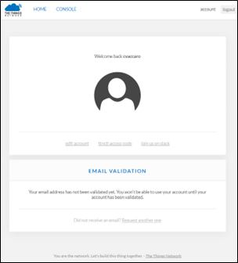

Laboratorio 3
Transmisión de datos a la nube usando protocolos de comunicación entre sensores
Objetivo:
-
Conocer los diferentes protocolos de comunicación entre sensores para transmitir los datos a la nube.
-
Procesar los datos obtenidos mediante una programación para enfocar el módulo hacia aplicaciones
específicas.
Duración:
Ciento veinte (120) minutos.
Materiales y Herramientas:
Introducción:
Los microcontroladores mbed son una serie de placas de desarrollo de microcontroladores ARM diseñadas para la
creación rápida de prototipos.
El microcontrolador mbed NXP LPC1768 en particular está diseñado para crear prototipos de todo tipo de
dispositivos, especialmente aquellos que incluyen Ethernet, USB y la flexibilidad de muchas interfaces
periféricas y memoria FLASH. Está empaquetado como un pequeño factor de forma DIP para la creación de prototipos
con PCB, tableros y placas de prueba, e incluye un programador USB FLASH incorporado.
Incluye 512 KB de FLASH, 32 KB de RAM y muchas interfaces, incluidas Ethernet, host y dispositivo USB, CAN, SPI,
I2C, ADC, DAC, PWM y otras interfaces de E / S. El pinout anterior muestra las interfaces de uso común y sus
ubicaciones. Tenga en cuenta que todos los pines numerados (p5-p30) también se pueden usar como interfaces
DigitalIn y DigitalOut.
LoRaWAN es una especificación de redes LPWAN (Low Power Wide
Area Network). Tomando como base los niveles OSI, sería capa 2 (Enlace de Datos). Es lo que se conoce como MAC (Media Access Control).
LoRaWAN se encarga de unir diferentes dispositivos LoRa gestionando sus canales y parámetros de conexión: canal,
ancho de banda, cifrado de
datos, etc.
En la capa 1 del modelo OSI, capa física, encontramos la tecnología LoRa de
comunicación. Esta tecnología permite el envío y recepción de información punto-a-punto. Lo que caracteriza a un
dispositivo LoRa es su largo alcance con un mínimo dispositivo.
Para ello emplea la técnica de espectro ensanchado, donde la señal a mandar utiliza más ancho de banda que el
necesario teóricamente pero que permite una recepción de múltiples señales a la vez que tengan distinta
velocidad.
Tipos de comuniación
-
Modo LoRa: Comunicación punto a punto
En modo Lora los nodos pueden funcionar con una conexión punto-a-punto (P2P) o mesh la principal
característica de este modo es que no se requiere un dispositivo intermediario que administre la
comunicación, los dispositivos pueden enviar entre ellos información directamente, esto es perfecto para
comunicaciones sencillas y simples por ejemplo controlar el encendido y apagado de un motor.
La otra manera es de tipo mesh donde encontramos un nodo que se encarga de coordinar la red, sus
desventajas son que está limitada a 255 redes de 255 nodos y a que el nodo coordinador solo puede
escuchar un nodo a la vez.
-
Modo LoRaWAN
En modo LoRaWAN los nodos forzosamente se deben conectar a un Gateway que soporta hasta 62,500 y puede
escuchar 8 nodos a la vez, para poder unirse a la red y aprovechar las bondades del protocolo el nodo
debe enviar una serie de llaves de identificación y seguridad, todos los nodos trabajan en una conexión
tipo estrella, los mismos nodos aun estando en movimiento se conectan al Gateway más cercano y con mejor
calidad de comunicación, muy similar a como funciona una red celular.
En protocolo LoRaWAN existen tres tipos de clases de nodo:
Clase A:
La más soportada en casi todos los dispositivos, este tipo de clase ofrece el mayor ahorro de energía
debido a que solo entra en modo escucha (llamado ventana RX) después de enviar un dato hacia el Gateway,
por eso es ideal para dispositivos que usan una batería.
Clase B:
Este tipo de dispositivos tiene las ventanas de recepción con base a tiempos predeterminados con el
Gateway, este tipo de nodos puede usar una batería o una fuente externa dependiendo de los tiempos
asignados de escucha.
Clase C:
Este tipo de clase ofrece el menor ahorro de energía debido a que siempre está en modo escucha y solo
cuando es necesario en modo transmitir, la recomendación es usarlo en dispositivos que cuentan con una
fuente externa de alimentación.
Investigación
Pregunta 1: Indique las diferencias entre los protocolos SPI e I2C.
Pregunta 2: ¿Cuáles son las diferentes frecuencias de trabajo en las que operan los nodos LoRa?
Pregunta 3: Explique las dos maneras de conexión entre los nodos LoRa y el Gateway (OTAA y ABP).
Procedimiento
Paso 1: Programación del microcontrolador
-
Inicie un navegador web de su preferencia.
-
Ingrese a la dirección: https://simulator.mbed.com/
-
Seleccione el código “Temperature / humidity” y dé clic en “Load demo”.
-
Modifique el código para que la LCD muestre los mensajes en español.
-
Modifique el código para que el led se prenda cuando la temperatura es mayor a 30 °C y la
humedad es inferior al 15%.
Paso 2: Creación de cuenta en The Things Network (TTN)
-
Abra una nueva pestaña en el navegador web e ingrese a la dirección:
https://www.thethingsnetwork.org/
-
Dé clic en Sign UP, complete el formulario y cree la cuenta.
-
Recibirá un correo para activar su cuenta.

Paso 3: Configuración de dispositivos en The Things Network (TTN)
-
Una vez activada la cuenta desde su correo, dé clic en CONSOLE.
-
Seleccione APPLICATIONS para crear una aplicación que recibirá los datos del microcontrolador.
-
Dé clic en add application.
-
Definimos el nombre de la aplicación como “laboratorio-pst-apellido” y la creamos dando clic en “Add
application”.
-
Seleccionamos la opción “register device”.
-
Registramos un nuevo dispositivo con el nombre de “arm-mbed-apellido” y generamos automáticamente el
“Device EUI”
-
Una vez registrado el dispositivo, anotaremos el “Device EUI”, “Application EUI” y “App Key”
Si los valores tienen el formato como en la imagen anterior, presione el siguiente ícono:
<>
-
Regrese a la sección de la aplicación, dando clic en el nombre de su aplicación (laboratorio-pst) en la
parte superior izquierda de la pantalla; luego dé clic en la opción “Payload Formats”.
-
En este segmento se definirá cómo se procesarán los datos recibidos mediante el protocolo LoRaWAN.
Creamos el decoder con el siguiente código:
-
Guardamos.
Paso 4: Configuración de dispositivos en The Things Network (TTN)
-
Cargamos el código “LoRaWAN”, editamos las tres credenciales obtenidas en el paso 3 literal “g” y
ejecutamos el código.
-
Presionamos el botón del microcontrolador para enviar el valor de temperatura a TTN.
Como se pudo apreciar, el programa envía el valor de temperatura como
texto plano y sólo con un decimal. En el envío de datos de sensores, no se recomienda enviar la
información de esta manera, primero por seguridad y segundo mientras más datos se envíen, más es
el consumo de energía.
Pregunta 4: El código por defecto, ¿cuántos bytes está enviando por cada mensaje? Y ¿Qué representa cada
uno de ellos?
-
Editamos el código para que no envíe el valor en texto plano sino el valor de la temperatura en sí.
Creamos una variable global con el nombre temp de tipo float inicializada en cero, luego nos dirigimos a
la función send_message( ) en la línea 35 aproximadamente y lo reemplazamos por el siguiente código:
static void send_message() {
uint8_t tx_buffer[50] = { 0 };
temp = sht31.readTemperature();
tx_buffer[0] = temp;
tx_buffer[1] = int(temp*100)%100;
int packet_len = strlen((char*) tx_buffer);
printf("Sending %d bytes: %d.%d\n", packet_len, tx_buffer[0], tx_buffer[1]);
int16_t retcode = lorawan.send(MBED_CONF_LORA_APP_PORT, tx_buffer, packet_len, MSG_UNCONFIRMED_FLAG);
if (retcode < 0) {
retcode == LORAWAN_STATUS_WOULD_BLOCK ? printf("send - duty cycle violation\n")
: printf("send() - Error code %d\n", retcode);
return;
}
printf("%d bytes scheduled for transmission\n", retcode);
}
-
Modificar el “Payload Formats” con el siguiente código:
-
Presionamos el botón del microcontrolador nuevamente para enviar otro valor de temperatura a TTN.
-
Modificamos el código nuevamente para que ahora envíe cada vez que la temperatura es mayor a 30°C. En
la función main ( ), en la línea 75 aproximadamente está declarado el evento de envío del mensaje cada
que se presiona el botón, esa línea la modificamos por: “ev_queue.call_every(100, &send_message);”.
Para evitar el envío de datos continuos, será necesario verificar que el valor sensado es
diferente al valor enviado anteriormente.
-
Luego en la función send_message( ) agregamos las validaciones necesarias quedando de la siguiente forma:
static void send_message() {
if(temp == sht31.readTemperature()) return;
temp = sht31.readTemperature();
if(temp<30) return;
uint8_t tx_buffer[50] = { 0 };
tx_buffer[0] = temp;
tx_buffer[1] = int(temp*100)%100;
int packet_len = strlen((char*) tx_buffer);
printf("Sending %d bytes: %d.%d\n", packet_len, tx_buffer[0], tx_buffer[1]);
int16_t retcode = lorawan.send(MBED_CONF_LORA_APP_PORT, tx_buffer, packet_len, MSG_UNCONFIRMED_FLAG);
if (retcode < 0) {
retcode == LORAWAN_STATUS_WOULD_BLOCK ? printf("send - duty cycle violation\n")
: printf("send() - Error code %d\n", retcode);
return;
}
printf("%d bytes scheduled for transmission\n", retcode);
}
RETO
Basado en la práctica, modificar el código del microcontrolador para que envíe mensajes cuando detecte cambios en
la temperatura o en la humedad, y sólo debe enviar cuando la temperatura es mayor a 30 °C y la humedad menor a
15%. Recuerde que también debe modificar el decoder para que muestre el valor de temperatura y humedad en TTN.
Bibliografía
Programación de eventos MBED: https://github.com/ARMmbed/mbed-events
Decoder Payload Format: https://www.thethingsnetwork.org/forum/t/decrypting-messages-for-dummies/
Descripción mbed LPC1768: https://os.mbed.com/platforms/mbed-LPC1768/